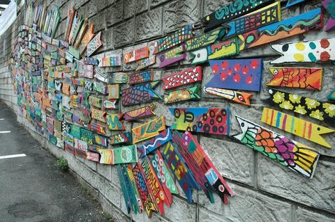
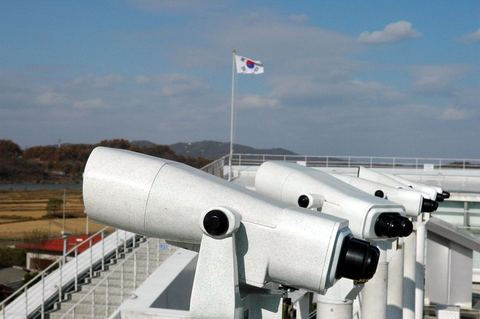

去过99次韩国的我，对第100次的韩国之行仍然充满好奇，因为每次都有不同的收获意外的惊喜。…
35 张照片 →
为重振受中东呼吸综合征(MERS)疫情影响而陷入低迷的韩国旅游市场，韩亚航空公司组织了由中国150名主要旅行社总经理、40名媒体人、10名权威博主组成的考察团今天出发！我也身在其中，我愿意率先一探究竟，传递一个真实的韩国信息！…
66 张照片 →
14年前去韩国自然恬静的江原道，第一印象非常好！2001年的《冬季恋歌》让江原道尤其是龙平滑雪场成为热点，时隔许久再度前往初体验Fun Ski度假项目………
220 张照片 →
韩国釜山的甘川文化村庄素有“釜山的圣托里尼”之称，2012年11月27日在日本福冈举行的亚洲都市景观奖的颁奖仪式上，甘川文化村庄被选为亚洲最美丽的村庄……这里曾经是20世纪50年代韩国战争后难民避难於此地,后来在釜山“胡同艺术工程”的推动下…
13 张照片 →
